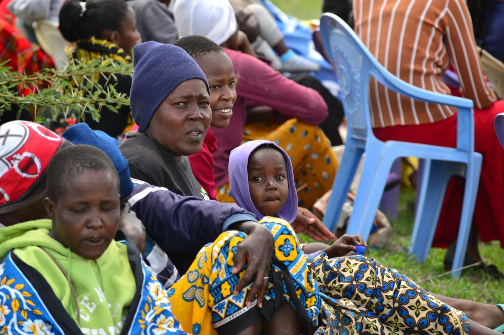

YOUTH MENTAL WELLNESS
Objective: To provide comprehensive psychosocial support to children and youth, promoting mental health and emotional well-being.Mental health is a crucial component of overall well-being, yet it is often overlooked, particularly in underserved regions like Kajiado County, Kenya. The youth in this area face numerous challenges, including poverty, limited access to education, and the pressures of navigating a rapidly changing social landscape. These factors can contribute to stress, anxiety, depression, and other mental health issues, which, if left unaddressed, can have long-term negative impacts on their development and future prospects. Recognizing the urgent need to support the mental health of young people in Kajiado, the Youth Mental Wellness Program was established. The program’s objective is to provide comprehensive psychosocial support to children and youth, promoting mental health and emotional well-being through innovative methods, including the use of videos and skits to raise awareness around mental health issues.
The primary objective of the Youth Mental Wellness Program is to create a supportive environment where young people in Kajiado County can thrive emotionally and mentally. By providing comprehensive psychosocial support, the program aims to equip children and youth with the tools they need to cope with stress, build resilience, and develop healthy emotional responses. Additionally, the program seeks to break the stigma surrounding mental health by using culturally relevant and engaging methods, such as videos and skits, to educate the community about the importance of mental well-being.
Program components
The Youth Mental Wellness Program is designed to address the mental health needs of children and youth in Kajiado County through three key components: psychosocial support services, mental health awareness campaigns, and community engagement.
a. Psychosocial Support Services: At the heart of the program are the psychosocial support services offered to children and youth. These services include counseling, peer support groups, and workshops on stress management, coping strategies, and emotional intelligence. Trained counselors and psychologists work closely with the participants to provide individualized care, helping them navigate personal challenges and develop positive mental health habits. The program also offers support to parents and guardians, equipping them with the knowledge and skills to support their children’s mental health at home.

b. Mental Health Awareness Campaigns: To effectively address the stigma and misconceptions surrounding mental health, the program employs a creative approach through the use of videos and skits. These tools are designed to be both informative and entertaining, making it easier to engage the community on sensitive topics. The videos and skits are created by local youth, ensuring that the content is culturally relevant and resonates with the audience. These productions are shown in schools, community centers, and through social media platforms, sparking conversations and encouraging young people to seek help when needed. 

Impact and Long-Term Vision
The Youth Mental Wellness Program has the potential to significantly impact the lives of children and youth in Kajiado County. By providing accessible and comprehensive psychosocial support, the program helps young people develop resilience, self-esteem, and healthy coping mechanisms. The use of videos and skits as part of the awareness campaigns also ensures that the message of mental health reaches a wide audience, challenging the stigma and encouraging a culture of openness and support.
In the long term, the program envisions a Kajiado County where mental health is prioritized, and where children and youth can grow up in an environment that supports their emotional well-being. By fostering a generation that is aware of and proactive about their mental health, the program aims to reduce the prevalence of mental health issues and create a more resilient and empowered community.
As mental health continues to be a global concern, initiatives like this program are essential for ensuring that young people in underserved regions have the support they need to lead healthy, fulfilling lives.